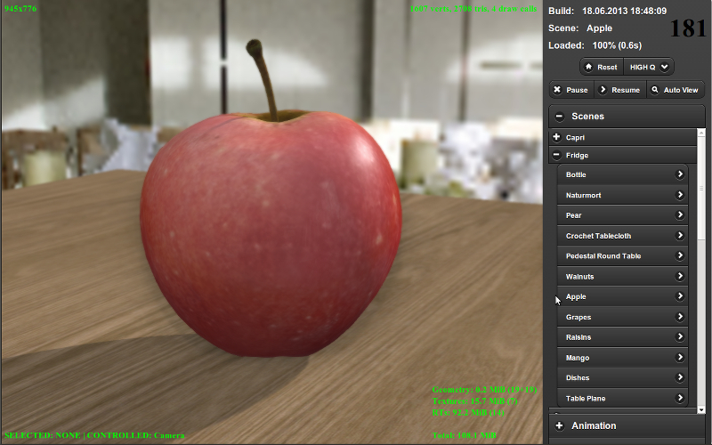

Workflow¶
Developing any product is a creative process with many participants who have different skills and experience. However no matter how complex it is and what is the target it’s always possible to separate the production stage in which the bulk of assets and source code is authored.
When using Blend4Web the workflow is the following:
Authoring 3D scenes in Blender.
Exporting scenes.
Running, tweaking and debugging scenes in the Viewer.
Creating the target application.
Authoring Scenes¶
Besides the usual stages such as modeling, texturing, animation etc a scene should be prepared for working in the engine.
General recommendations:
We strongly recommend to save your blend files in the
blender/project_namedirectory. Auxiliary files which are not intended for loading in your app (for example, references), should be located there as well.Images and media files should be external and located in the
deploy/assets/project_namedirectory.Files from which you export should contain resources which are actually required in your application (objects, materials, textures, animation etc).
Scene components should have distinct names. They should not be named “Cube.001”, “Material” or “Armature”.
We recommend you to practice linking components from other files (libraries).
Exporting Scenes¶
In order to load scenes authored in Blender into the engine you have to transform them into the format suitable for reading by a browser. At the moment text files with .json extension are used in which exported data structures are saved in the JSON (JavaScript Object Notation) format. In turn, this file refers to a single binary file with a .bin extension (which contains geometry and animation data) and to external resources (textures, audio and video files).
While the .json and .bin files are created upon export, textures and media files are normally placed by hand. Resources embedded in .blend files are automatically placed near the exported scene.
Export can be performed by choosing the Blend4Web (.json) option from the File > Export menu. For quick access, search for b4w export (hot key SPACE).
It is recommended to export your scenes in the directory intended for deploying applications, for example deploy/assets/project_name.
It is required to use relative filepaths for external assets (normally this is by default). If this is not the case, run the File > External Data > Make All Paths Relative operator. Using absolute filepaths instead of relative ones may result in errors upon loading .blend and .json files on other computers.
Upon export, the scene is checked for Blender features not supported by the engine. In such cases an error message is generated. The list of possible export errors is specified in the corresponding section.
Export options are described in detail in the corresponding section.
Displaying Scenes in the Viewer¶
When using the local development server it’s possible to preview current scene using Fast Preview button, located on the Scene->Development Server panel in Blender. In this case the scene will be exported inside some temporary storage and loaded in the Viewer app.
The other method is using Run in Viewer export option. In this case the scene will be displayed in the Viewer app immediately after the export.
For the long-term storage of the scene in the scene list of the viewer, it’s required to manually add the entry to the apps_dev/viewer/assets.json text file. This file is opened automatically in Blender if you are using Blend4Web SDK.
Use the “Text Editor” to modify it:

Then select the assets.json file in the window to edit it:

To add a new scene you need to know the category in which it should be displayed. The category normally corresponds to the project name and to the name of the directory where the corresponding files are stored.
Example¶
For example below you can see a part of assets.json. In this file there are two projects - “Capri” and “Fridge” each with corresponding scenes:
{
name: "Capri",
items: [
{
name: "Baken",
load_file : "capri/props/baken/baken.json"
},
{
name: "Terrain",
load_file : "capri/landscape/terrain/terrain.json"
}
]
},
{
name: "Fridge",
items: [
{
name: "Apple",
load_file : "fridge/fruits/apple/apple.json"
},
{
name: "Mango",
load_file : "fridge/fruits/mango/mango.json"
}
]
}
To add a new scene you can copy and paste a similar scene’s description to the required category and then edit its name and path to the exported file.
A successfully added scene should appear in the scenes’ list of the viewer in the required category.
{kind=link}
Application Development¶
At this stage an application is created. Logic for scene loading and user interaction is written using JavaScript. The application developer notes are given in the corresponding section.